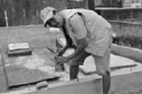
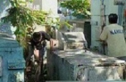
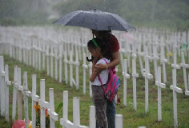
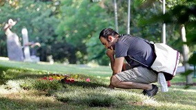

Halloween in the Philippines
How do Filipinos celebrate Halloween
In other countries, Halloween is a big deal: time to plan the best spooky costumes, time to get a whole tub of sweets and goodies through trick or treats, and a time to hop on one party after another. It’s such a merry time to spend a night of terror and fun– that is, when you celebrate it in countries like U.S. where they have a different culture of celebrating this event. In the Philippines, it’s somehow different.
 REPAINTING. A staff here is seen painting the tomb in time for Halloween season.
A few days before November 1, you’d regularly see news features about cemeteries being cleaned in time for what Filipinos call “Undas,” which means “Day of the Dead.”This happens during November 2 but Filipinos observe this holiday as early as November 1. At this point in time, graves, mausoleums, and tombs get painted, grasses are cut, and it’s being made cleaner as people flock to the cemeteries where their dead loved ones.
 PAYING RESPECT. A mother and daughter visiting their loved one despite the heavy rain.
By November 1, all cemeteries will be filled with people who come to pay respect to their beloved dead. Since Philippines is a predominantly Catholic nation, this event is very significant to Filipinos. It becomes a mini reunion where relatives unite in honoring their dead by visiting them and reminiscing the life they lived. Most families bring flowers, light candles, and say a prayer when paying respect. Others stay longer; some even bring food and other items that will keep them out of boredom, especially when bringing kids.


TRICK OR TREAT. Kids in their Halloween costumes.
On the other hand, aside from this traditional culture of visiting the dead, some families practice Halloween just like how it is being celebrated in other countries. Some businesses and schools here hold Halloween parties. Some villages hold Trick or Treat events for kids. The braver ones do ghost hunting in the creepiest attractions here in the Philippines—all in the spirit of fun, of course.